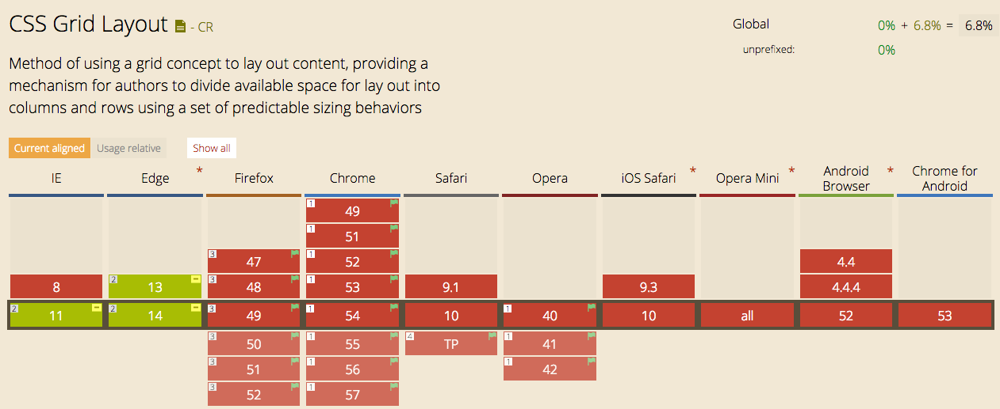
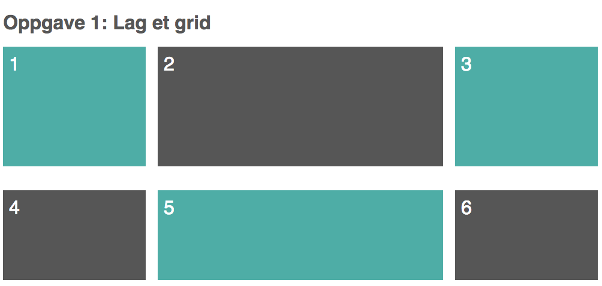
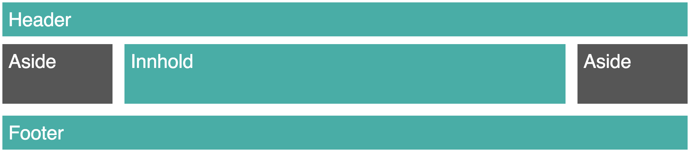

class: front-page # CSS grids ## Making grids great again Hanne og Helge Fagdagen 04.11.2016 ??? OK alle sammen! Nå skal vi lære å lage grids i CSS! Og hva er det rette verktøyet for å lage grids? Rekk opp hånden de som husker når vi fikset dette med tables. I nyere tid, ca hele den tiden jeg har jobbet med frontend, har vi jobbet ekstensivt med floats. Men så, for et par år siden, ble det plutselig OK å bruke flexbox. Og det har vært en revolusjon, blant annet når det kommer til å lage grids. --- class: cols two # CSS grids vs flexbox .col[ <div class="flexbox-horizontal"> <div class="flexbox-box"></div> <div class="flexbox-box"></div> <div class="flexbox-box"></div> </div> <div class="flexbox-vertical"> <div class="flexbox-box"></div> <div class="flexbox-box"></div> <div class="flexbox-box"></div> </div> ] ??? CSS grids, som vi skal lære i dag, kommer ikke til å erstatte flexbox. Flexbox er et fantastisk verktøy for å sette opp grids i èn dimensjon, enten på X-aksen eller Y-aksen. --- class: cols two # CSS grids vs flexbox .col[ <div class="faded"> <div class="flexbox-horizontal"> <div class="flexbox-box"></div> <div class="flexbox-box"></div> <div class="flexbox-box"></div> </div> <div class="flexbox-vertical"> <div class="flexbox-box"></div> <div class="flexbox-box"></div> <div class="flexbox-box"></div> </div> </div> ] .col[ <div class="grid-example"> <div class="grid-box"></div> <div class="grid-box"></div> <div class="grid-box"></div> <div class="grid-box"></div> <div class="grid-box"></div> </div> ] ??? CSS grids sin styrke kommer frem når vi skal ha grids der noder i gridet skal strekke seg over flere akser, enten i høyden eller bredden (eller begge). --- # Eksempel Vegveven - Statens vegvesen sitt intranett <img src="./images/vegveven-grid.png" class="vegveven-grid" /> ??? For å gi et eksempel. Dette er forsiden til Vegveven, Statens vegvesens intranett. Nå har det seg sånn at det er selveste Helge som har laget denne forsiden. Helge, var det mye jobb som kunne ha blitt unngått hvis CSS grids var støttet? --- # Nettleserstøtte  ??? For det må sies, CSS grids har heller dårlig støtte inntil videre. Men når denne teknologien støttes skal vi være klare til å bruke den. --- class: cols two # CSS grids 101 Et enkelt grid. .col[ ```html <div class="wrapper"> <div class="box">1</div> <div class="box">2</div> <div class="box">3</div> </div> ``` ```css .wrapper { display: grid; grid-gap: 20px; grid-template-columns: 100px 100px 300px; grid-template-rows: auto; } ``` ] .col[ <style> .wrapper.ex-1 { display: grid; grid-gap: 20px; grid-template-columns: 100px 100px 300px; grid-template-rows: auto; } </style> <div class="wrapper ex-1"> <div class="box">1</div> <div class="box">2</div> <div class="box">3</div> </div> ] ??? Hvordan lager man et grunnleggende grid? Først trenger vi en wrapper rundt elementene som skal bli gridet. `display: grid;`. Det er også nyttig med `grid-gap`, plassen mellom elementene. grid-template-columns brukes for å sette antall kolonner. Samme med grid-template-rows, som angir størrelsen på radene. --- class: cols two # Fraction units Fraction units (<code>fr</code>) angir hvor mye av tilgjengelig plass elementet kan bruke. .col[```html <div class="wrapper"> <div class="box">1</div> <div class="box">2</div> <div class="box">3</div> </div> ``` ```css .wrapper { display: grid; grid-gap: 20px; grid-template-columns: 1fr 1fr 3fr; } ``` ] .col[ <style> .wrapper.ex-2 { display: grid; grid-gap: 20px; grid-template-columns: 1fr 1fr 3fr; } </style> <div class="wrapper ex-2"> <div class="box">1</div> <div class="box">2</div> <div class="box">3</div> </div> ] ??? Her ser man det samme gridet som forrige slide, forskjellen ligger i kolonnebreddene vi har satt. I stedet for at de to første kolonnene tar 100px, tar de nå 1fr. Den siste kolonnen tar 3fr, tre ganger så mye som de to første kolonnene. --- class: cols two # Repeat .col[```html <div class="wrapper"> <div class="box">1</div> <div class="box">2</div> <div class="box">3</div> </div> ``` ```css .wrapper { display: grid; grid-gap: 20px; grid-template-columns: repeat(2, 1fr) 3fr; } ``` ] .col[ <style> .wrapper.ex-repeat { display: grid; grid-gap: 20px; grid-template-columns: repeat(2, 1fr) 3fr; } </style> <div class="wrapper ex-repeat"> <div class="box">1</div> <div class="box">2</div> <div class="box">3</div> </div> ] --- # minmax <code>minmax()</code> angir minimumsverdi og maksimumsverdi. ```html <div class="wrapper"> <div class="box">1</div> <div class="box">2</div> <div class="box">3</div> </div> ``` ```css .wrapper { display: grid; grid-gap: 20px; grid-template-columns: minmax(100px, 1fr) 1fr 3fr; grid-template-rows: auto; } ``` ??? Det andre konseptet er en funksjon som heter minmax(). Den tar to verdier, hvilken minimumsverdi man ønsker og hvilken maksimumsverdi man ønsker. Denne kan brukes for å sette kolonnebredde eller radhøyde. --- # Oppgave 1: Et enkelt grid  --- # Oppgave 1: Et enkelt grid - Lag CSS denne skjermdumpen - HTML- og CSS-filer til å jobbe i finner du i <code>tasks/3-grids/oppgave1</code> - Endringer skal bare gjøres i CSS-filen --- (Foto: Bart Everson) --- class: cols two # Grid lines, Grid tracks, Grid cell .col[ - Rutenettet til gridet (de grå linjene) - Det følger oppsettet til kolonnene og radene - Starter på 1 - Gridets slutt kan refereres med -1 ] .col[ <div class="ex-col-2-numbers"> <div class="number">1</div> <div class="number">2</div> <div class="number">3</div> </div> <div class="wrapper ex-lines"> <div class="box">1</div> <div class="box">2</div> <div class="box">3</div> <div class="box">4</div> </div> <style> .wrapper.ex-lines { display: grid; grid-gap: 20px; grid-template-columns: repeat(2, 1fr); padding: 20px; background: grey; } </style> ] ??? Se på gridet som et rutenett Grid lines - Gridet består av grid linesKan være horisontale eller vertikale - Kan refereres til med nummer eller tall - 1, 2, 3 Grid track - Området mellom to grid lines. - Vertikalt kan du se på det som en kolonne, men en grid track kan også gå horisontalt. Grid cell - Området mellom fire grid lines. Se på det som en celle i en tabell. --- class: cols two # Grid-column & Grid-row .col[ ```html <div class="wrapper"> <div class="box">1</div> <div class="box">2</div> <div class="box">3</div> </div> ``` ```css .wrapper { display: grid; grid-gap: 20px; grid-template-columns: repeat(2, 1fr); } ``` ] .col[ <div class="ex-col-2-numbers"> <div class="number">1</div> <div class="number">2</div> <div class="number">3</div> </div> <div class="wrapper ex-start-1 ex-has-col-numbers"> <div class="box">1</div> <div class="box">2</div> <div class="box">3</div> </div> <style> .wrapper.ex-start-1 { display: grid; grid-gap: 20px; grid-template-columns: repeat(2, 1fr); } </style> ] ??? Det jeg nettopp sa blir veldig relevant når vi begynner å lage celler som skal gå over flere kolonner. Ta en kikk på dette gridet der vi har tre celler. Så ønsker vi at den ene cellen skal dekke to kolonner mens de to andre skal ligge under. Dette er ganske enkelt å få til med CSS-grid: --- class: cols two # Grid-column & Grid-row .col[ ```html <div class="wrapper"> <div class="box">1</div> <div class="box">2</div> <div class="box">3</div> </div> ``` ```css .wrapper { display: grid; grid-gap: 20px; grid-template-columns: repeat(2, 1fr); } .box:first-child { grid-column-start: 1; grid-column-end: 3; } ``` ] .col[ <div class="ex-col-2-numbers"> <div class="number">1</div> <div class="number">2</div> <div class="number">3</div> </div> <div class="wrapper ex-start-2 ex-has-col-numbers"> <div class="box">1</div> <div class="box">2</div> <div class="box">3</div> </div> <style> .wrapper.ex-start-2 { display: grid; grid-gap: 20px; grid-template-columns: repeat(2, 1fr); } .wrapper.ex-start-2 .box:first-child { grid-column-start: 1; grid-column-end: 3; } </style> ] ??? For hver celle kan vi spesifisere på hvilken grid line den skal starte og på hvilken grid line den skal slutte. Vi spesifiserer start med grid-column-start Vi spesifiserer slutt med grid-column-end Minuset med å gjøre det på denne måten er at vi har hardkodet at cellen skal slutte på grid-line 3. Hva skjer da om vi legger til en ny kolonne? Da vil ikke cellen gå helt til slutten. Dette kan vi løse ved å i stedet si at cellen skal slutte på grid-line nummer -1. --- class: cols two # Grid-column & Grid-row .col[ ```html <div class="wrapper"> <div class="box">1</div> <div class="box">2</div> <div class="box">3</div> </div> ``` ```css .wrapper { display: grid; grid-gap: 20px; grid-template-columns: repeat(2, 1fr); } .box:first-child { grid-column-start: 1; /* grid-column-end: 3; */ grid-column-end: -1; } ``` ] .col[ <div class="ex-col-2-numbers"> <div class="number">1</div> <div class="number">2</div> <div class="number">3</div> </div> <div class="wrapper ex-start-3 ex-has-col-numbers"> <div class="box">1</div> <div class="box">2</div> <div class="box">3</div> </div> <style> .wrapper.ex-start-3 { display: grid; grid-gap: 20px; grid-template-columns: repeat(2, 1fr); } .wrapper.ex-start-3 .box:first-child { grid-column-start: 1; grid-column-end: -1; } </style> ] --- class: cols two # Grid-column & Grid-row .col[ ```html <div class="wrapper"> <div class="box">1</div> <div class="box">2</div> <div class="box">3</div> </div> ``` ```css .wrapper { display: grid; grid-gap: 20px; grid-template-columns: repeat(2, 1fr); } .box:first-child { /* grid-column-start: 1; */ /* grid-column-end: 3; */ /* grid-column-end: -1; */ grid-column: 1 / -1; } ``` ] .col[ <div class="ex-col-2-numbers"> <div class="number">1</div> <div class="number">2</div> <div class="number">3</div> </div> <div class="wrapper ex-start-4 ex-has-col-numbers"> <div class="box">1</div> <div class="box">2</div> <div class="box">3</div> </div> <style> .wrapper.ex-start-4 { display: grid; grid-gap: 20px; grid-template-columns: repeat(2, 1fr); } .wrapper.ex-start-4 .box:first-child { grid-column: 1 / -1; } </style> ] ??? Det hele kan vi også angi med short-hand-notation på denne måten. I stedet for grid-column-start og -end, skriver vi bare grid-column, og så angir vi to verdier med en / mellom. Den første verdien er start og den siste verdien er end. Denne egenskapen kan også brukes på rader: grid-row. --- class: cols two # Span .col[ ```html <div class="wrapper"> <div class="box">1</div> <div class="box">2</div> <div class="box">3</div> <div class="box">4</div> <div class="box">5</div> </div> ``` ```css .wrapper { display: grid; grid-gap: 20px; grid-template-columns: repeat(3, 1fr); } ``` ] .col[ <div class="ex-col-3-numbers"> <div class="number">1</div> <div class="number">2</div> <div class="number">3</div> <div class="number">4</div> </div> <div class="wrapper ex-span-0 ex-has-col-numbers"> <div class="box">1</div> <div class="box">2</div> <div class="box">3</div> <div class="box">4</div> <div class="box">5</div> </div> <style> .wrapper.ex-span-0 { display: grid; grid-gap: 20px; grid-template-columns: repeat(3, 1fr); } </style> ] ??? Span er en annen nyttig ting vi kan bruke. Da spesifiserer vi hvor mange tracks eller kolonner en celle skal gå over. --- class: cols two # Span .col[ ```html <div class="wrapper"> <div class="box">1</div> <div class="box">2</div> <div class="box">3</div> <div class="box">4</div> <div class="box">5</div> </div> ``` ```css .wrapper { display: grid; grid-gap: 20px; grid-template-columns: repeat(3, 1fr); } .box:first-child { grid-column: span 2; } ``` ] .col[ <div class="ex-col-3-numbers"> <div class="number">1</div> <div class="number">2</div> <div class="number">3</div> <div class="number">4</div> </div> <div class="wrapper ex-span ex-has-col-numbers"> <div class="box">1</div> <div class="box">2</div> <div class="box">3</div> <div class="box">4</div> <div class="box">5</div> </div> <style> .wrapper.ex-span { display: grid; grid-gap: 20px; grid-template-columns: repeat(3, 1fr); } .wrapper.ex-span .box:first-child { grid-column: span 2; } </style> ] ??? denne cellen vil da alltid dekke to kolonner uavhengig av hvor i gridet den befinner seg. --- class: cols two # Span .col[ ```html <div class="wrapper"> <div class="box">1</div> <div class="box">2</div> <div class="box">3</div> <div class="box">4</div> <div class="box">5</div> </div> ``` ```css .wrapper { display: grid; grid-gap: 20px; grid-template-columns: repeat(3, 1fr); } .box:first-child { grid-row: span 2; } ``` ] .col[ <div class="ex-col-3-numbers"> <div class="number">1</div> <div class="number">2</div> <div class="number">3</div> <div class="number">4</div> </div> <div class="wrapper ex-span-2 ex-has-col-numbers"> <div class="box">1</div> <div class="box">2</div> <div class="box">3</div> <div class="box">4</div> <div class="box">5</div> </div> <style> .wrapper.ex-span-2 { display: grid; grid-gap: 20px; grid-template-columns: repeat(3, 1fr); } .wrapper.ex-span-2 .box:first-child { grid-row: span 2; } </style> ] ??? Vi kan gjøre det samme med rader. --- # Oppgave 2: Holy Grail  --- # Oppgave 2: Holy Grail - 2A) Lag "holy grail-layout" (google it!) (trenger ikke å fylle hele skjermhøyden) - 2B) Bruk minmax slik at asides alltid er minimum 100px ## Husk: - HTML- og CSS-filer til å jobbe i finner du i <code>tasks/3-grids/oppgave2</code> - Endringer skal bare gjøres i CSS-filen --- # Oppgave 3: Vegveven --- # Oppgave 3: Vegveven - Ingen innhold - Kolonner og rader ihht. skissen - HTML- og CSS-filer til å jobbe i finner du i <code>tasks/3-grids/oppgave3</code> ## Ferdig? - Gjør det responsivt! - Klarer du det uten media queries? --- # grid-auto-rows <code>grid-auto-rows</code> gir riktig antall rader med ønsket høyde. ```html <div class="wrapper"> <div class="box">1</div> <div class="box">2</div> <div class="box">3</div> <div class="box">4</div> <div class="box">5</div> </div> ``` ```css .wrapper { display: grid; grid-gap: 20px; grid-template-columns: repeat(3, 1fr); grid-auto-rows: minmax(120px, 1fr) } ``` ??? --- class: cols two # grid-auto-flow .col[ ```html <div class="wrapper"> <div class="box">1</div> <div class="box">2</div> <div class="box wide">3</div> <div class="box">4</div> </div> ``` ```css .wrapper { display: grid; grid-gap: 20px; grid-template-columns: repeat(3, 1fr); } .wide { grid-column: span 3; } ``` ] .col[ <style> .ex-flow-1 { display: grid; grid-gap: 20px; grid-template-columns: repeat(3, 1fr); } .ex-flow-1 .wide { grid-column: span 3; } </style> <div class="ex-flow-1"> <div class="box">1</div> <div class="box">2</div> <div class="box wide">3</div> <div class="box">4</div> </div> ] ??? --- class: cols two # grid-auto-flow .col[ ```html <div class="wrapper"> <div class="box">1</div> <div class="box">2</div> <div class="box wide">3</div> <div class="box">4</div> </div> ``` ```css .wrapper { display: grid; grid-gap: 20px; grid-template-columns: repeat(3, 1fr); grid-auto-flow: dense; } .wide { grid-column: span 3; } ``` ] .col[ <style> .ex-flow-2 { display: grid; grid-gap: 20px; grid-template-columns: repeat(3, 1fr); grid-auto-flow: dense; } .ex-flow-2 .wide { grid-column: span 3; } </style> <div class="ex-flow-2"> <div class="box">1</div> <div class="box">2</div> <div class="box wide">3</div> <div class="box">4</div> </div> ] ??? --- # auto-fill <code>grid-template-columns</code> kombinert med <code>auto-fill</code> og <code>minmax</code> genererer så mange kolonner som det er plass til. Fungerer til nå bare i Firefox med flagget <code>layout.css.grid.enabled</code>. ```html <div class="wrapper"> <div class="box">1</div> <div class="box">2</div> <div class="box">3</div> <div class="box">4</div> </div> ``` ```css .wrapper { display: grid; grid-gap: 20px; grid-template-columns: repeat(auto-fill, minmax(120px, 1fr)); } ``` --- # Lenker CSS-tricks: Complete guide to grid - https://css-tricks.com/snippets/css/complete-guide-grid/ Grid by example - http://gridbyexample.com/ Eksempel på avansert grid - http://codepen.io/anon/pen/JbPWQp ??? For det må sies, CSS grids har heller dårlig støtte inntil videre. Men når denne teknologien støttes skal vi være klare til å bruke den. --- class: center middle bekk-top # TAKK! Hanne og Helge ??? Nå tenker jeg at vi gir gass og lar Petter ta scenen, også tar vi en liten pause etter det! Noen spørsmål?